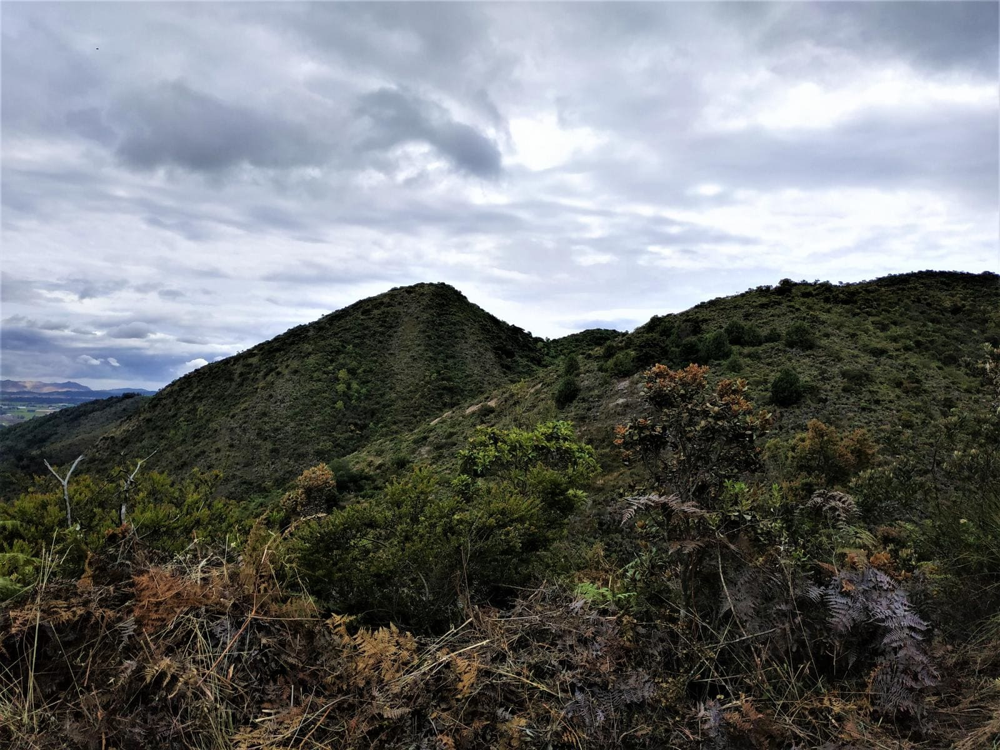
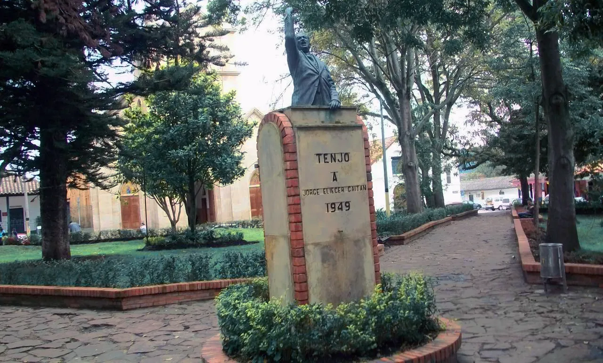
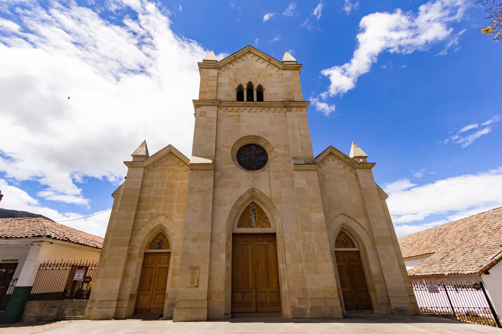
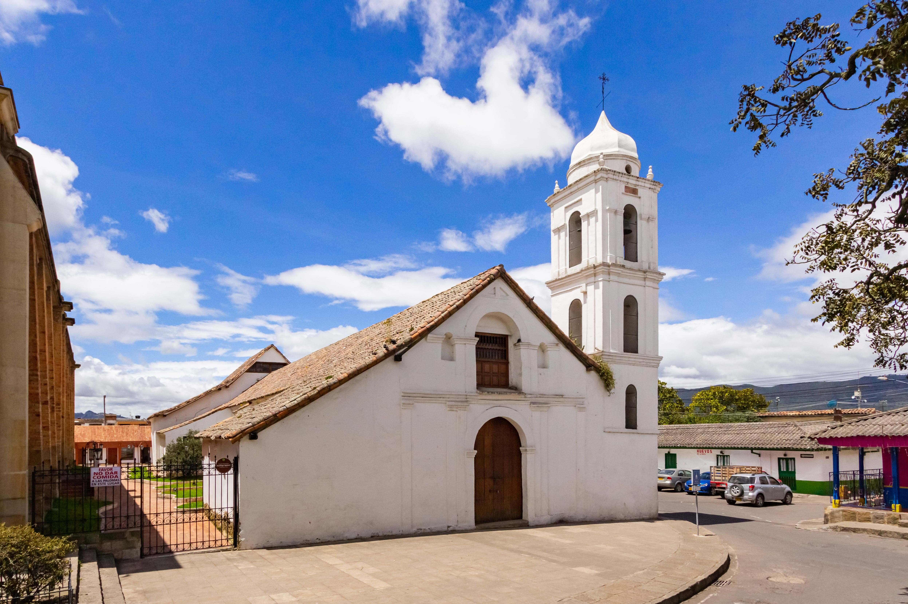
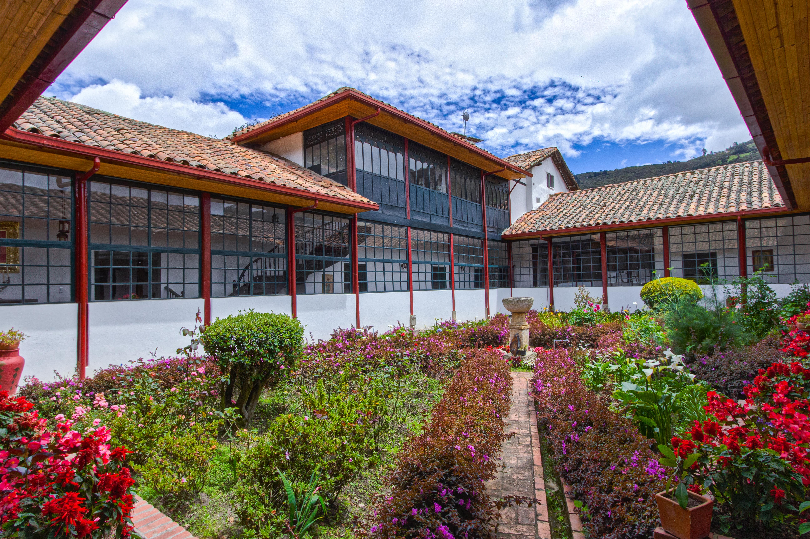
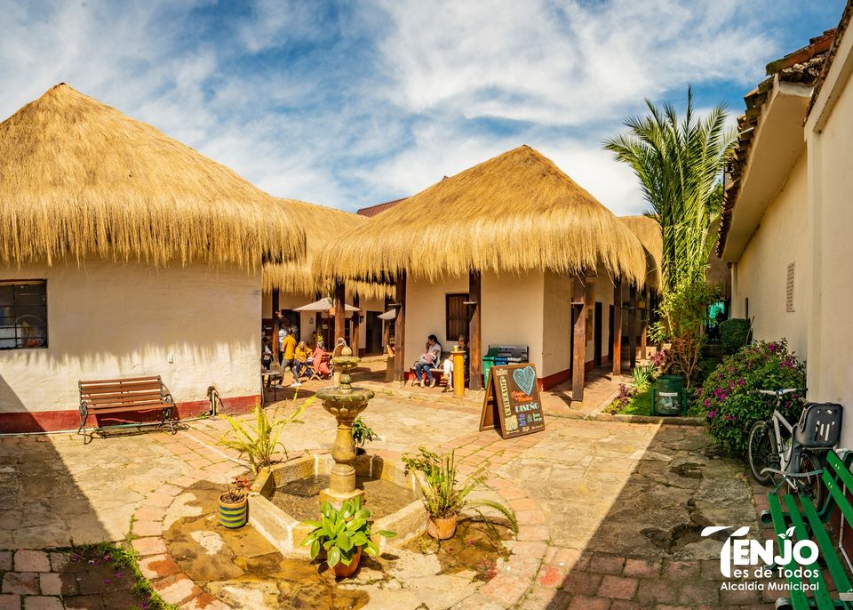
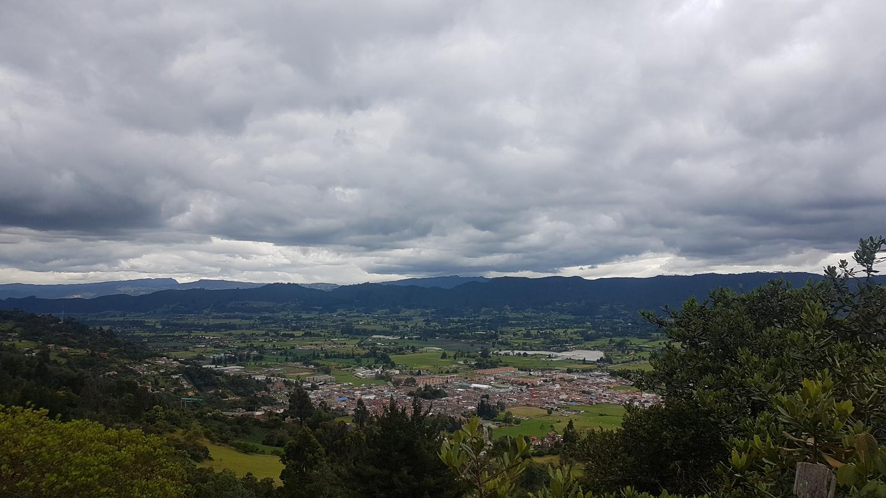
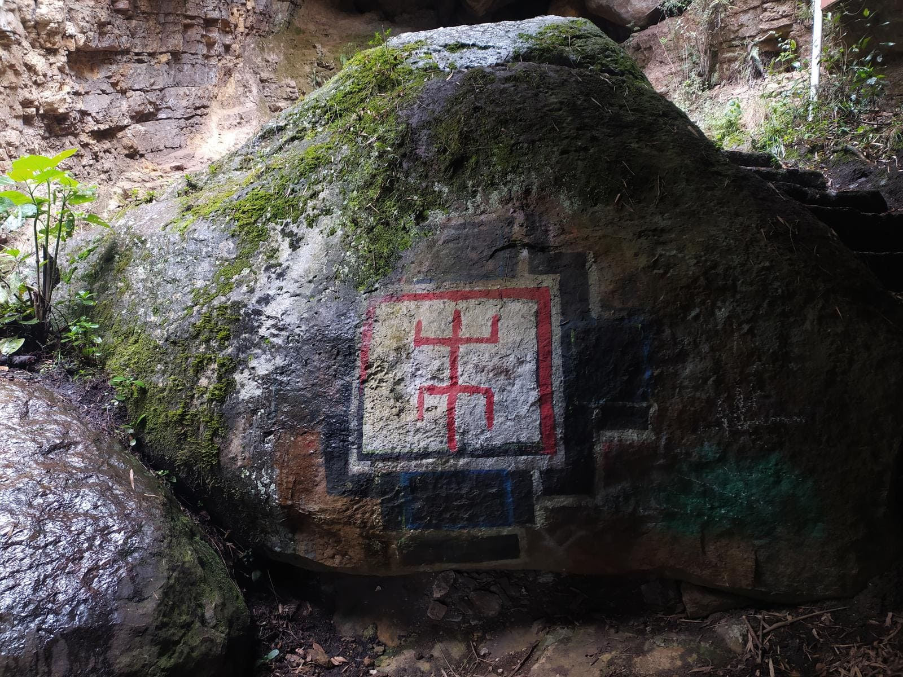

Serranía de Majuy

Un paraíso para los amantes de la naturaleza. Esta serranía ofrece senderos ecológicos, una rica biodiversidad y paisajes montañosos espectaculares. Ideal para practicar senderismo, camping y conectar con la naturaleza.
Peña de Juaica
Un mirador natural con vistas panorámicas del Valle de Tenjo. Es un lugar sagrado para los muiscas y un punto de encuentro para los amantes de la ufología.
Parque Principal

El corazón de Tenjo. Un espacio público ideal para relajarse, disfrutar de la arquitectura colonial y asistir a eventos locales.
Iglesia Santiago Apóstol

Un hermoso templo colonial con una rica historia. Su arquitectura y decoración religiosa son dignas de admirar.
Templo Colonial o Templo Doctrinero

Museo de Arte Religioso que cuenta con obras de apreciado valor, que datan de los siglos XVI y XVIII, entre las que se destacan pinturas de la Virgen del Rosario de Santo Domingo, de Santo Tomás de Aquino; el retablo del altar mayor recubierto de laminilla de oro, entre otros.
Casa Cural

Como un refugio apacible en plena plaza principal y vecina de la iglesia Santiago Apóstol, está la Casa Cural, la oficina para los trámites de la fe, para recibir un buen consejo, una bendición y también para llevar a su casa una botellita de agua bendita.
Casa Chitasugá

Una casona colonial que conserva su arquitectura original. Es un lugar lleno de historia y encanto, ideal para eventos culturales.
Cerro Pan de Azúcar

Otro mirador natural con vistas impresionantes. Perfecto para disfrutar de un momento de tranquilidad y apreciar la belleza del paisaje.
Senderos sector boquerón Las cuevas

Sendero ecológico que conduce a formaciones rocosas únicas y cuevas naturales. Ideal para explorar y conectar con la naturaleza.
Faunaticos
Un centro educativo y recreativo donde los visitantes pueden aprender sobre la fauna local y la conservación. Es perfecto para familias y personas interesadas en la vida silvestre de la región.